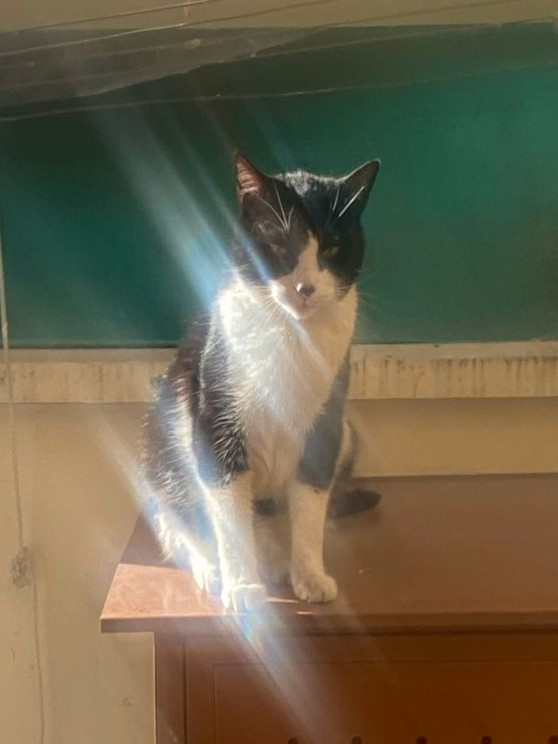

CURRICULUM VITAE

Tengo 7 años de experiencia como cazador de ratones, lauchas, guarenes, palomas, pajaros, saltamontes un doctorado en cuidar mi casa y con magister en ronroneos, me gusta mordiscar a los extraños, hacer pipi en las plantas beber agua de la llave del grifo de afuera, hacer burla al perro del vecino y hacer mi popo en su patio.
Estudios y Magister
- Cazador de Ratones
- Cazador de Lauchas
- terror de los Guarenes
Datos Personales
- Nombre: Charly Miau
- Email: charly.Michito@gmail.com
- Fono: 9644xxxxx